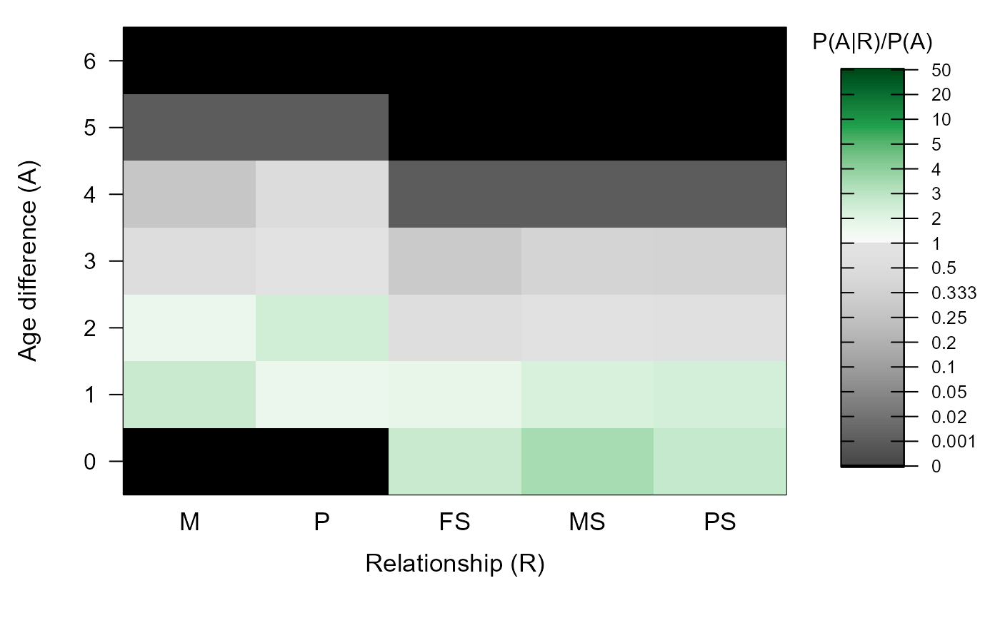
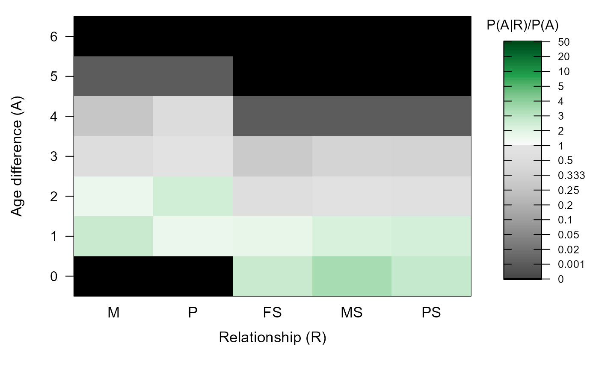

Age Priors
MakeAgePrior.RdEstimate probability ratios \(P(R|A) / P(R)\) for age differences A and five categories of parent-offspring and sibling relationships R.
Usage
MakeAgePrior(
Pedigree = NULL,
LifeHistData = NULL,
MinAgeParent = NULL,
MaxAgeParent = NULL,
Discrete = NULL,
Flatten = NULL,
lambdaNW = -log(0.5)/100,
Smooth = TRUE,
Plot = TRUE,
Return = "LR",
quiet = FALSE
)Arguments
- Pedigree
dataframe with id - dam - sire in columns 1-3, and optional column with birth years. Other columns are ignored.
- LifeHistData
dataframe with 3 or 5 columns: id - sex (not used) - birthyear (optional columns BY.min - BY.max - YearLast not used), with unknown birth years coded as negative numbers or NA. "Birth year" may be in any arbitrary discrete time unit relevant to the species (day, month, decade), as long as parents are never born in the same time unit as their offspring. It may include individuals not in the pedigree, and not all individuals in the pedigree need to be in LifeHistData.
- MinAgeParent
minimum age of a parent, a single number (min across dams and sires) or a vector of length two (dams, sires). Defaults to 1. When there is a conflict with the minimum age in the pedigree, the pedigree takes precedent.
- MaxAgeParent
maximum age of a parent, a single number (max across dams and sires) or a vector of length two (dams, sires). If NULL, it will be set to latest - earliest birth year in
LifeHistData, or estimated from the pedigree if one is provided. See details below.- Discrete
discrete generations? By default (NULL), discrete generations are assumed if all parent-offspring pairs have an age difference of 1, and all siblings an age difference of 0, and there are at least 20 pairs of each category (mother, father, maternal sibling, paternal sibling). Otherwise, overlapping generations are presumed. When
Discrete=TRUE(explicitly or deduced),SmoothandFlattenare always automatically set toFALSE. UseDiscrete=FALSEto enforce (potential for) overlapping generations.- Flatten
logical. To deal with small sample sizes for some or all relationships, calculate weighed average between the observed age difference distribution among relatives and a flat (0/1) distribution. When
Flatten=NULL(the default) automatically set to TRUE when there are fewer than 20 parents with known age of either sex assigned, or fewer than 20 maternal or paternal siblings with known age difference. Also advisable if the sampled relative pairs with known age difference are non-typical of the pedigree as a whole.- lambdaNW
control weighing factors when
Flatten=TRUE. Weights are calculated as \(W(R) = 1 - exp(-lambdaNW * N(R))\), where \(N(R)\) is the number of pairs with relationship R for which the age difference is known. Large values (>0.2) put strong emphasis on the pedigree, small values (<0.0001) cause the pedigree to be ignored. Default results in \(W=0.5\) for \(N=100\).- Smooth
smooth the tails of and any dips in the distribution? Sets dips (<10% of average of neighbouring ages) to the average of the neighbouring ages, sets the age after the end (oldest observed age) to LR(end)/2, and assigns a small value (0.001) to the ages before the front (youngest observed age) and after the new end. Peaks are not smoothed out, as these are less likely to cause problems than dips, and are more likely to be genuine characteristics of the species. Is set to
FALSEwhen generations do not overlap (Discrete=TRUE).- Plot
plot a heatmap of the results?
- Return
return only a matrix with the likelihood-ratio \(P(A|R) / P(A)\) (
"LR") or a list including also various intermediate statistics ("all") ?- quiet
suppress messages.
Value
A matrix with the probability ratio of the age difference between two individuals conditional on them being a certain type of relative (\(P(A|R)\)) versus being a random draw from the sample (\(P(A)\)). Assuming conditional independence, this equals the probability ratio of being a certain type of relative conditional on the age difference, versus being a random draw.
The matrix has one row per age difference (0 - nAgeClasses) and five columns, one for each relationship type, with abbreviations:
- M
Mothers
- P
Fathers
- FS
Full siblings
- MS
Maternal half-siblings
- PS
Paternal half-siblings
When Return='all', a list is returned with the following elements:
- BirthYearRange
vector length 2
- MaxAgeParent
vector length 2, see details
- tblA.R
matrix with the counts per age difference (rows) / relationship (columns) combination, plus a column 'X' with age differences across all pairs of individuals
- PA.R
Proportions, i.e.
tblA.Rdivided by itscolSums, with full-sibling correction applied if necessary (see vignette).- LR.RU.A.raw
Proportions
PA.Rstandardised by global age difference distribution (column 'X');LR.RU.Aprior to flattening and smoothing- Weights
vector length 4, the weights used to flatten the distributions
- LR.RU.A
the ageprior, flattened and/or smoothed
- Specs.AP
the names of the input
PedigreeandLifeHistData(orNULL),lambdaNW, and the 'effective' settings (i.e. after any automatic update) ofDiscrete,Smooth, andFlatten.
Details
\(\alpha_{A,R}\) is the ratio between the observed counts of pairs with age difference A and relationship R (\(N_{A,R}\)), and the expected counts if age and relationship were independent (\(N_{.,.}*p_A*p_R\)).
During pedigree reconstruction, \(\alpha_{A,R}\) are multiplied by the genetic-only \(P(R|G)\) to obtain a probability that the pair are relatives of type R conditional on both their age difference and their genotypes.
The age-difference prior is used for pairs of genotyped individuals, as well as for dummy individuals. This assumes that the propensity for a pair with a given age difference to both be sampled does not depend on their relationship, so that the ratio \(P(A|R) / P(A)\) does not differ between sampled and unsampled pairs.
For further details, see the vignette.
CAUTION
The small sample correction with Smooth and/or Flatten
prevents errors in one dataset, but may introduce errors in another; a
single solution that fits to the wide variety of life histories and
datasets is impossible. Please do inspect the matrix, e.g. with
PlotAgePrior, and adjust the input parameters and/or the output
matrix as necessary.
A few outlier birth years can heavily influence the output; these may be
easiest to spot with Smooth=FALSE, Flatten=FALSE.
Single cohort
When all individuals in LifeHistData have the same birth year, it is
assumed that Discrete=TRUE and MaxAgeParent=1. Consequently,
it is assumed there are no avuncular pairs present in the sample; cousins
are considered as alternative. To enforce overlapping generations, and
thereby the consideration of full- and half- avuncular relationships, set
MaxAgeParent to some value greater than \(1\).
When no birth year information is given at all, a single cohort is assumed, and the same rules apply.
Other time units
"Birth year" may be in any arbitrary time unit relevant to the species (day, month, decade), as long as parents are always born before their putative offspring, and never in the same time unit (e.g. parent's BirthYear= 1 (or 2001) and offspring BirthYear=5 (or 2005)). Negative numbers and NA's are interpreted as unknown, and fractional numbers are not allowed.
MaxAgeParent
The maximum parental age for each sex equals the maximum of:
the maximum age of parents in
Pedigree,the input parameter
MaxAgeParent,the maximum range of birth years in
LifeHistData(including BY.min and BY.max). Only used if both of the previous areNA, or if there are fewer than 20 parents of either sex assigned.1, if
Discrete=TRUEor the previous three are allNA
If the age distribution of assigned parents does not capture the maximum
possible age of parents, it is advised to specify MaxAgeParent for
one or both sexes. Not doing so may hinder subsequent assignment of both
dummy parents and grandparents. Not compatible with Smooth. If the
largest age difference in the pedigree is larger than the specified
MaxAgeParent, the pedigree takes precedent (i.e. the largest of the
two is used).
@section grandparents & avuncular
The agepriors for grand-parental and avuncular pairs is calculated from
these by sequoia, and included in its output as
`AgePriorExtra`.
See also
sequoia and its argument args.AP,
PlotAgePrior for visualisation. The age vignette gives
further details, mathematical justification, and some examples.
Examples
# without pedigree or lifehistdata:
MakeAgePrior(MaxAgeParent = c(2,3))
#> ℹ Ageprior: Flat 0/1, overlapping generations, MaxAgeParent = 2,3
 #> M P FS MS PS
#> 0 0 0 1 1 1
#> 1 1 1 1 1 1
#> 2 1 1 0 0 1
#> 3 0 1 0 0 0
#> 4 0 0 0 0 0
MakeAgePrior(Discrete=TRUE)
#> ℹ Ageprior: Flat 0/1, discrete generations, MaxAgeParent = 1,1
#> M P FS MS PS
#> 0 0 0 1 1 1
#> 1 1 1 1 1 1
#> 2 1 1 0 0 1
#> 3 0 1 0 0 0
#> 4 0 0 0 0 0
MakeAgePrior(Discrete=TRUE)
#> ℹ Ageprior: Flat 0/1, discrete generations, MaxAgeParent = 1,1
 #> M P FS MS PS
#> 0 0 0 1 1 1
#> 1 1 1 0 0 0
#> 2 0 0 0 0 0
# single cohort:
MakeAgePrior(LifeHistData = data.frame(ID = letters[1:5], Sex=3,
BirthYear=1984))
#> ℹ Ageprior: Flat 0/1, discrete generations, MaxAgeParent = 1,1
#> M P FS MS PS
#> 0 0 0 1 1 1
#> 1 1 1 0 0 0
#> 2 0 0 0 0 0
# overlapping generations:
# without pedigree: MaxAgeParent = max age difference between any pair +1
MakeAgePrior(LifeHistData = SeqOUT_griffin$LifeHist)
#> ℹ Ageprior: Flat 0/1, overlapping generations, MaxAgeParent = 10,10
#> M P FS MS PS
#> 0 0 0 1 1 1
#> 1 1 1 0 0 0
#> 2 0 0 0 0 0
# single cohort:
MakeAgePrior(LifeHistData = data.frame(ID = letters[1:5], Sex=3,
BirthYear=1984))
#> ℹ Ageprior: Flat 0/1, discrete generations, MaxAgeParent = 1,1
#> M P FS MS PS
#> 0 0 0 1 1 1
#> 1 1 1 0 0 0
#> 2 0 0 0 0 0
# overlapping generations:
# without pedigree: MaxAgeParent = max age difference between any pair +1
MakeAgePrior(LifeHistData = SeqOUT_griffin$LifeHist)
#> ℹ Ageprior: Flat 0/1, overlapping generations, MaxAgeParent = 10,10
 #> M P FS MS PS
#> 0 0 0 1 1 1
#> 1 1 1 1 1 1
#> 2 1 1 1 1 1
#> 3 1 1 1 1 1
#> 4 1 1 1 1 1
#> 5 1 1 1 1 1
#> 6 1 1 1 1 1
#> 7 1 1 1 1 1
#> 8 1 1 1 1 1
#> 9 1 1 1 1 1
#> 10 1 1 0 0 0
#> 11 0 0 0 0 0
# with pedigree:
MakeAgePrior(Pedigree=Ped_griffin,
LifeHistData=SeqOUT_griffin$LifeHist,
Smooth=FALSE, Flatten=FALSE)
#> M P FS MS PS
#> 0 0 0 1 1 1
#> 1 1 1 1 1 1
#> 2 1 1 1 1 1
#> 3 1 1 1 1 1
#> 4 1 1 1 1 1
#> 5 1 1 1 1 1
#> 6 1 1 1 1 1
#> 7 1 1 1 1 1
#> 8 1 1 1 1 1
#> 9 1 1 1 1 1
#> 10 1 1 0 0 0
#> 11 0 0 0 0 0
# with pedigree:
MakeAgePrior(Pedigree=Ped_griffin,
LifeHistData=SeqOUT_griffin$LifeHist,
Smooth=FALSE, Flatten=FALSE)
 #> ℹ Ageprior: Pedigree-based, overlapping generations, MaxAgeParent = 3,3
#> M P FS MS PS
#> 0 0.000 0.000 4.810 4.117 3.684
#> 1 3.462 1.959 2.787 2.626 2.960
#> 2 2.006 3.159 0.077 0.689 0.582
#> 3 0.340 0.959 0.000 0.000 0.000
#> 4 0.000 0.000 0.000 0.000 0.000
# with small-sample correction:
MakeAgePrior(Pedigree=Ped_griffin,
LifeHistData=SeqOUT_griffin$LifeHist,
Smooth=TRUE, Flatten=TRUE)

#> ℹ Ageprior: Pedigree-based, overlapping generations, flattened, smoothed, MaxAgeParent = 5,5
#> M P FS MS PS
#> 0 0.000 0.000 2.659 3.419 2.799
#> 1 2.688 1.649 1.778 2.262 2.313
#> 2 1.690 2.461 0.598 0.759 0.720
#> 3 0.548 0.972 0.299 0.379 0.360
#> 4 0.274 0.486 0.001 0.001 0.001
#> 5 0.001 0.001 0.000 0.000 0.000
#> 6 0.000 0.000 0.000 0.000 0.000
# Call from sequoia() via args.AP:
Seq_HSg5 <- sequoia(SimGeno_example, LH_HSg5, Module="par",
args.AP=list(Discrete = TRUE), # non-overlapping generations
CalcLLR = FALSE, # skip time-consuming calculation of LLR's
Plot = FALSE) # no summary plots when finished
#> ℹ Checking input data ...
#> ✔ Genotype matrix looks OK! There are 214 individuals and 200 SNPs.
#>
#> ── Among genotyped individuals: ___
#> ℹ There are 106 females, 108 males, 0 of unknown sex, and 0 hermaphrodites.
#> ℹ Exact birth years are from 2000 to 2001
#> ___
#> ℹ Calling `MakeAgePrior()` ...
#> ℹ Ageprior: Flat 0/1, discrete generations, MaxAgeParent = 1,1
#>
#> ~~~ Duplicate check ~~~
#> ✔ No potential duplicates found
#>
#> ~~~ Parentage assignment ~~~
#>
#> Time | R | Step | Progress | Dams | Sires | GPs | Total LL
#> -------- | -- | ---------- | ---------- | ----- | ----- | ----- | ----------
#> 08:54:49 | 0 | initial | | 0 | 0 | 0 | -18301.9
#> 08:54:49 | 0 | parents | | 126 | 165 | 0 | -13690.1
#>
#> ✔ assigned 126 dams and 165 sires to 214 individuals
#>
#> ℹ Ageprior: Pedigree-based, overlapping generations, MaxAgeParent = 3,3
#> M P FS MS PS
#> 0 0.000 0.000 4.810 4.117 3.684
#> 1 3.462 1.959 2.787 2.626 2.960
#> 2 2.006 3.159 0.077 0.689 0.582
#> 3 0.340 0.959 0.000 0.000 0.000
#> 4 0.000 0.000 0.000 0.000 0.000
# with small-sample correction:
MakeAgePrior(Pedigree=Ped_griffin,
LifeHistData=SeqOUT_griffin$LifeHist,
Smooth=TRUE, Flatten=TRUE)

#> ℹ Ageprior: Pedigree-based, overlapping generations, flattened, smoothed, MaxAgeParent = 5,5
#> M P FS MS PS
#> 0 0.000 0.000 2.659 3.419 2.799
#> 1 2.688 1.649 1.778 2.262 2.313
#> 2 1.690 2.461 0.598 0.759 0.720
#> 3 0.548 0.972 0.299 0.379 0.360
#> 4 0.274 0.486 0.001 0.001 0.001
#> 5 0.001 0.001 0.000 0.000 0.000
#> 6 0.000 0.000 0.000 0.000 0.000
# Call from sequoia() via args.AP:
Seq_HSg5 <- sequoia(SimGeno_example, LH_HSg5, Module="par",
args.AP=list(Discrete = TRUE), # non-overlapping generations
CalcLLR = FALSE, # skip time-consuming calculation of LLR's
Plot = FALSE) # no summary plots when finished
#> ℹ Checking input data ...
#> ✔ Genotype matrix looks OK! There are 214 individuals and 200 SNPs.
#>
#> ── Among genotyped individuals: ___
#> ℹ There are 106 females, 108 males, 0 of unknown sex, and 0 hermaphrodites.
#> ℹ Exact birth years are from 2000 to 2001
#> ___
#> ℹ Calling `MakeAgePrior()` ...
#> ℹ Ageprior: Flat 0/1, discrete generations, MaxAgeParent = 1,1
#>
#> ~~~ Duplicate check ~~~
#> ✔ No potential duplicates found
#>
#> ~~~ Parentage assignment ~~~
#>
#> Time | R | Step | Progress | Dams | Sires | GPs | Total LL
#> -------- | -- | ---------- | ---------- | ----- | ----- | ----- | ----------
#> 08:54:49 | 0 | initial | | 0 | 0 | 0 | -18301.9
#> 08:54:49 | 0 | parents | | 126 | 165 | 0 | -13690.1
#>
#> ✔ assigned 126 dams and 165 sires to 214 individuals
#>